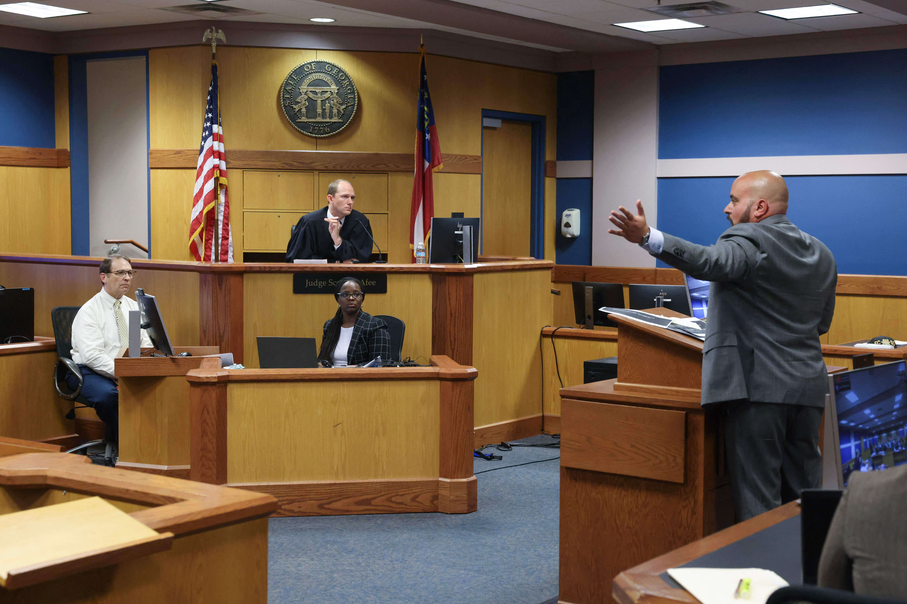
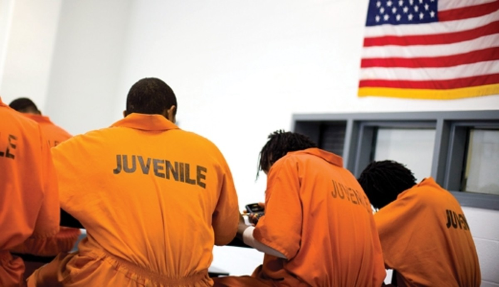

| Home | Sources | Quiz |
Welcome to USC Title 18!IntroductionTitle 18 of the United States Code serves as the primary legal framework governing criminal matters within the federal government of the United States. This comprehensive code is divided into five distinct subgroups: Crimes, Criminal Procedure, Prisons and Prisoners, Correction of Youthful Offenders, and Immunity of Witnesses, collectively addressing a wide array of legal aspects in the realm of federal law enforcement and justice. CrimesIn the first subgroup, the focus is on delineating specific criminal offenses and how to move forward with prosecution. Over the course of nearly 53 years, this subgroup has evolved to accommodate a broad spectrum of crimes due to continuous policy development and the introduction of new legislation into the legal code. A notable instance of such evolution occurred in 1948 with the introduction of the Principle-based Punishment law. This law is brought up when an individual commits an offense against the United States or actively contributes to its commission by aiding, abetting, counseling, commanding, inducing, or procuring, rendering them punishable as a principal offender. This legal provision is frequently invoked in cases involving accomplices who neither directly participate in the criminal act nor take actions to rectify the situation that led to the offense. Section 18-2 often serves as the guiding framework for such cases, ensuring a balanced approach to prosecuting those who play a role in criminal activities but do not engage in direct criminal conduct. Criminal ProceduresThe second subgroup within Title 18 deals with the intricate realm of criminal procedure within federal court cases. These procedures intricately build upon the information gathered during the crime classification phase, providing the presiding judge with the essential framework to serve appropriate penalties in accordance with the law. The chapters contained within this subgroup encompass a wide spectrum of pivotal components, ranging from General Provisions that define the standardized rules governing the appearance and functioning of courtrooms during legal proceedings, to the critical and complex aspects of Witness Protection, and the gravitas of the Death Sentence, reflecting the comprehensive nature of criminal procedure within the federal judicial system. Prisons and PrisonersTitle 18 comprehensively addresses the legal framework surrounding prisons and prisoners throughout the United States, offering valuable insights into their operations, inmate categorization, and crucial guidelines. An essential starting point within this subsection involves the exploration of the chapter that defines the role and accessibility of institution directors, ensuring transparency in contact and communication with these key figures. Furthermore, it delves into the multifaceted aspects related to institutional placement, whether stemming from legal or medical grounds, thereby affording individuals a holistic understanding of the processes involved in incarceration. This subsection proves equally invaluable for individuals already incarcerated, as it dedicates multiple chapters to pivotal topics such as post-sentence employment opportunities and discharge procedures upon the completion of one's sentence. In essence, Title 18's treatment of prisons and prisoners transcends mere legal statutes, offering a comprehensive resource for individuals navigating the complex landscape of the criminal justice system. Correction of Youthful OffendersTitle 18 of the United States Code addresses the correction of youthful offenders, recognizing the importance of distinguishing the unique needs and circumstances of young individuals within the criminal justice system. This aspect of the code reflects a balanced approach to rehabilitation and accountability, aiming to redirect the lives of youthful offenders towards a more productive and law-abiding path. By emphasizing specialized provisions and programs tailored to the developmental stages of youth, Title 18 ensures that these individuals receive appropriate guidance and support during their involvement with the legal system. In essence, this section underscores the recognition that youthful offenders often require a distinct and rehabilitative approach that not only addresses their transgressions but also offers opportunities for growth and positive reintegration into society. Immunity of WitnessesTitle 18 grants witnesses various forms of immunity, such as use immunity or transactional immunity, which offer protection from prosecution based on the information they provide during legal proceedings. This legal framework helps ensure that witnesses can come forward without fear of personal repercussions, thus promoting the pursuit of justice and the uncovering of vital information in criminal cases. By providing this assurance, Title 18 plays a crucial role in maintaining the integrity and effectiveness of the criminal justice system. | ||